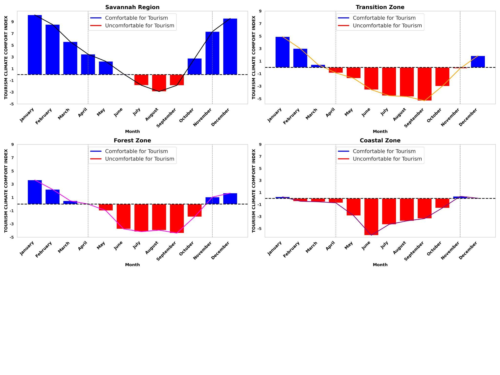
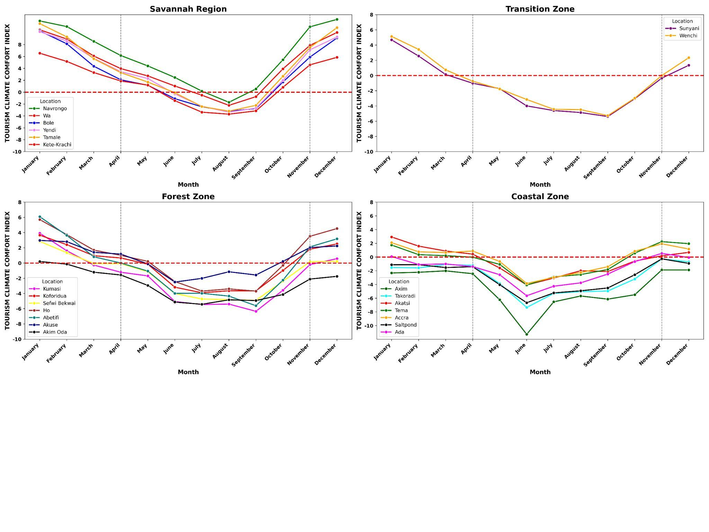
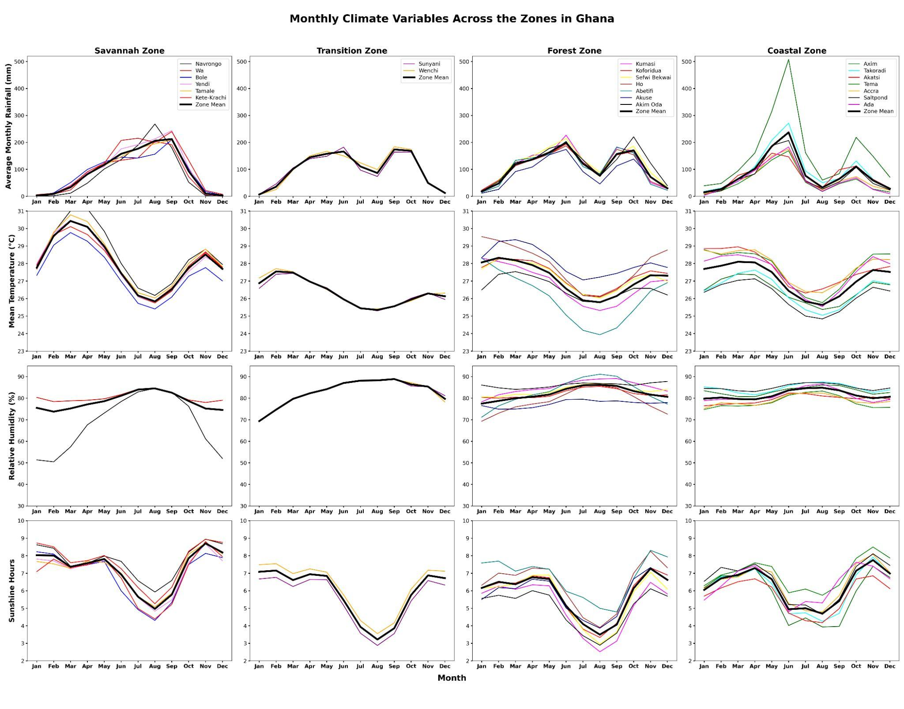

Authors
Dept. of Meteorology and Climate Science, KNUST, Ghana · Dept. of Earth, Environmental & Atmospheric Sciences, WKU, USA
Abstract
Understanding how climate influences tourism comfort is crucial for sustainable destination planning, particularly in regions where climate variability poses significant challenges. This study comprehensively analyzes tourism climate comfort across Ghana using the Tourism Climate Comfort Index (TCCI). The TCCI synthesizes temperature, humidity, rainfall, and sunshine duration into a standardized comfort measure. Utilizing 43 years (1981–2023) of meteorological data from 22 synoptic stations across Ghana's four agro-ecological zones, the study evaluates spatial and temporal patterns of tourism climate comfort. Results show favourable conditions typically from November to March, and notable discomfort during May to August, especially in the Coastal and Forest zones. Findings advocate for climate-informed tourism strategies to enhance resilience and economic potential within Ghana's tourism sector.
1. Study Area & Context
Ghana is located in West Africa between latitudes 4°N–12°N and longitudes 1.5°E–3.5°W, with a 540 km Gulf of Guinea coastline. The country's climate is modulated by the West African Monsoon and the seasonal migration of the Intertropical Boundary (ITB), producing distinct dry and rainy seasons across its four agro-ecological zones.
Tourism is an increasingly important economic sector in Ghana, yet its climate suitability has been poorly quantified. This study fills that gap with the first long-term, spatially continuous TCCI climatology using station data from the Ghana Meteorological Agency (GMet).

Fig 1 — Study Domain: Map of Ghana showing the locations of 22 synoptic stations distributed across the four agro-ecological zones — Savannah, Transition, Forest, and Coastal. The station network ensures broad spatial coverage for kriging interpolation.
2. Methodology
TCCI Formulation
The TCCI combines meteorological variables into a single comfort index. Variables with positive tourism impacts (temperature amplitude, mean temperature, sunshine hours) are summed, while negative contributors (relative humidity, rainfall) are subtracted. All variables are standardized to a common scale before combination.
where:
Tamplitude = Tmax − Tmin
Tmean = 0.5 × (Tmax + Tmin)
Zi = (Xi − μ) / σ [standardization]
Missing data (varying from 28–84% availability across stations) were imputed using
linear regression exploiting the known inverse relationship between
temperature and relative humidity, followed by forward/backward filling. Spatial coverage
was achieved through Ordinary Kriging (implemented via Python's
pykrige
library), which minimizes estimation variance while accounting for spatial autocorrelation.
3. Climate Variables by Zone

Fig 2 — Monthly Climate Patterns Across Ghana's Agro-Ecological Zones: Rainfall (top), temperature, relative humidity, and sunshine hours (bottom) for the Savannah, Coastal, Transition, and Forest zones (1981–2023). The Savannah shows a unimodal rainfall pattern and the highest sunshine hours; the Forest and Coastal zones show bimodal patterns with persistently high humidity.
4. Results — Monthly TCCI Patterns

Fig 3 — Monthly TCCI Across Ghana's Climate Zones: All zones show peak TCCI in January–March and minimum values June–August. Positive TCCI (comfortable) in blue; negative TCCI (uncomfortable) in red. The Savannah sustains the longest comfortable period; the Forest zone dips deepest into discomfort.

Fig 4 — Monthly TCCI Trends by Zone: Savannah shows a declining trend from January through August, rebounding through December. Coastal zone demonstrates steady decline to June with minimal July–September variation. All zones reach peak comfort in January.
5. Heatmap — Seasonal & Spatial Comfort Patterns

Fig 5 — TCCI Heatmap (All 22 Stations × 12 Months): Stations organized by agro-ecological zone. Cooler colors = favorable for tourism; warmer colors = discomfort. November–April comfortable (TCCI −2.3 to +12.2). May–October uncomfortable (−11.1 to +5.4). June–August worst across all zones, especially Forest and Transition.
6. Spatial Distribution — Monthly TCCI Maps

Fig 6 — Monthly Spatial TCCI Maps (Kriging Interpolation): TCCI ranges from −10 (red, uncomfortable) to +10 (blue, comfortable). The country is most suitable November–April. Savannah (north) remains comfortable longest; southwestern Forest zone records the most extreme discomfort. Kriging provides continuous nationwide coverage from the 22 point-stations.
7. Key Findings & Implications
- Best months for tourism in Ghana: January, February, March, November, December — moderate temperatures, low humidity, minimal rainfall across most zones
- Worst months: June, July, August — TCCI as low as −11.3; extreme heat, high humidity, flooding risk, and elevated disease burden
- December peak: Confirms Ghana Tourism Authority (2023) data showing the highest international arrivals in December
- Forest zone most affected: Persistently high rainfall and humidity create the longest and most severe discomfort periods
- Urban Heat Island caveat: The UHI effect in cities like Accra and Kumasi can exacerbate discomfort beyond what rural stations capture
- Infrastructure implication: Tourism infrastructure investment should prioritize climate-resilient design — cooling systems, shaded spaces, green roofs — especially in Coastal and Forest zones
- Atlas 15 parallel: Just as the Kentucky Mesonet study argued for updated US precipitation standards, this study argues for TCCI integration into Ghana's national tourism planning
8. SDG Alignment
This study directly addresses three UN Sustainable Development Goals: SDG 3 (health risks from extreme heat/humidity during unfavourable months), SDG 8 (supporting Ghana's tourism-driven economic growth through climate-smart planning), and SDG 13 (climate action — integrating climate indices into policy for resilient destination management).